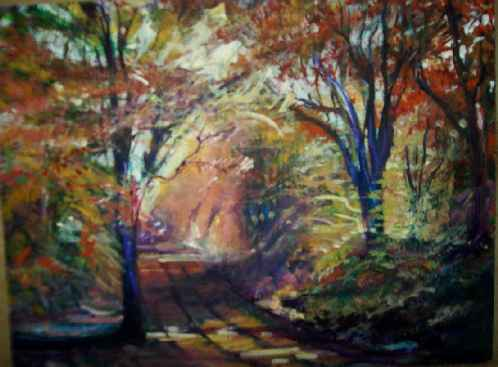

Un suspiro, con Delfina Acosta (Paraguay)
EL LÍMITE
Siempre que iba a la farmacia para comprar apósitos, aspirinas, violeta de genciana y aquellas medicinas menores con las que mantenía surtido mi botiquín, me solía hacer
acompañar por Ogro; era dueño de un olfato mayúsculo.
Aquel día que comenzó a las nueve de la mañana, el tránsito estaba endemoniado. Lo noté al sacar la cara.
Ante aquella impaciencia de los autos por llevarse adelante los segundos que faltaban antes de que la luz de los semáforos cambiara de amarillo a rojo, decidí no llevar al animal.
No fuera que tuviera que llorar su muerte, no fuera que el tiempo me transformara en una de esas mujeres de pelo mal teñido y peor peinado
con la memoria de
su perro en cualquier suspenso de una charla de señoras: “Ay, él sabía la hora en que los niños del colegio comunal se desbandaban en la calle, porque sacudía el portón de hierro con las patas y en vez de ladrar hacía una suerte de bocina con su boca. ¿Arte? Tal vez simple comedia. No lo sé.”
O: “Adivinaba el menú, carne roja a la parrilla o una presa de paleta de marrano, en mis ganas y en movimientos. Ningún marido se hubiera alegrado tanto como él, que empezaba a mover la cola; derecha, izquierda, derecha, izquierda, ah.... picarón...”
El farmacéutico, un hombre de ojeras profundas y permanente olor a alcanfor, hablaba por teléfono cuando llegué a su negocio poblado por vitrinas.
- ¿Aún no se lo encontró? Cierto es que la gente desaparece y aparece después de tres días..., pero... - lo escuché decir. Tenía la preocupación colgada del rostro.
Colgó el teléfono y se acercó a mí comentando: “Es el primer caso.”
- Pero es seguro que aparecerá - contesté sin saber de qué se trataba el asunto.
Usted sabe: la gente de la ciudad es así; uno apenas espera que termine de hablar el otro, para decir ya lo suyo; estamos apremiados por el afán de cerrar el habla a los demás con la primera estupidez que nos pica la cabeza. Y vamos de ¿me entendiste? a ¿qué decís?, de “no comprendo” a “no me estás oyendo” y cuanto más comentamos menos nos escuchamos y, por supuesto, menos nos entendemos; total que nadie escucha a nadie pero eso tampoco nos importa porque ya no podemos obrar de otra manera; el vértigo, una incomprensión animal se ha instalado en nuestras existencias. Ya no somos ciudad.
Cuando regresaba para la casa, vi un grupo de seis hombres; conversaban nerviosamente frente a un bar pintado con un color azul marino. Tres fumaban y los tres restantes no hacían caso del humo de los cigarrillos que sacaban lágrimas de sus ojos.
Me acerqué a los hombres haciendo como que intentaba ponerme a resguardo del viento sur.
-No, señores. Cándido ya debería haber regresado. Son más de las diez de la mañana - dijo el hombre de cuello largo, camisa arrugada y un sombrero panameño que le echaba una condición nocturna sobre el rostro. Se notaba el trato especial que ponía en sus palabras; aquella gente angustiada por la tardanza de Cándido buscaba el favor de la inteligencia para resolver el caso.
Yo sé de individuos que desaparecieron y volvieron a aparecer. Me estoy refiriendo a personas que dejaron el aseo de su casa, el plato de escarolas, de apios y de plantas oleaginosas, y la esposa de rostro sonrosado y de buenos modales, para ir tras las pisadas de aquellas mujeres fáciles de la brumosa zona portuaria; cuando ellas se sacaban la ropa frente al espejo de luna del ropero, era como si se desprendieran de todas sus alas de aves, hasta que sólo quedaba de sus figuras el pico largo y rojizo; picoteaban durante horas, días, semanas y meses el cuerpo purpurino de sus amantes, de aquellos maridos ajenos entonces perdidos. Demonios. Esas mujeres se alimentaban de sus bocas mientras hacían el amor. Y bueno..., cuando el vientre les crecía y sus senos se agrandaban goteando leche, se convertían en pájaros de torpe andar; caminaban pesadamente por la habitación, y su voz huraña sonaba, al caer la última claridad del crepúsculo, como graznidos de cuervos.
Los hombres, desesperados, horrorizados ante aquella situación que les causaba lástima y repulsión al mismo tiempo, retornaban tristes y desilusionados a sus casas. A sus esposas.
El grupo seguía charlando. Mencionaron varias veces la palabra límite.
Aquí debo hacer un aclaración en relación al límite: Hay una casa abandonada, pintada con color sepia, a donde vienen, cuando la lluvia es grande, buscando sitio para que sus fósforos no se apaguen, los mendigos. A diez metros de ella, aún se animan algunos niños a intentar una rayuela, una cola de cerdo, y algún juego propio de la perversidad de los pequeños.
Una niña albina suele marcar con tiza la figura del sol en el empedrado, que la lluvia pronto borra, hasta que ella vuelve a despejarlo usando crayolas de siete colores para pintar el arco iris.
Ahí termina la ciudad.
Y empieza el bosque.
En fin, los hombres de la ciudad formaron una cuadrilla.
- No queda más remedio que ir a buscarlo - dijo uno, que parecía hincar con el fuego de su cigarrillo el ánimo de los otros.
Y ellos se internaron en el sitio poblado de existencias ajenas. El viento cambió de dirección y un olor a comadrejas, a hojarasca de árboles de las más diversas especies, giró en el aire y dio un chillido de advertencia.
Los curiosos de la ciudad se quedaron en el límite, de cara a la oscuridad. Fumaban.
Pasaron tres días y tres noches.
La cuadrilla regresó cansada. Sólo pudieron encontrar el cuerpo de Cándido convertido en carne corrompida sobre un matorral; en sus cavidades parecían haber hecho nido las aves de carroña; algunas bestezuelas peleaban ferozmente por las vísceras. Eso fue lo que contaron.
Pero trajeron, colgado de un grueso alambre, el cuerpo todavía sangrante del lobo feroz abatido por los disparos de las escopetas. Eso sí.
AQUELLA QUE TE AMÓ
Palomas de repente en mis mejillas.
Un sacudir de alas si regresas,
amante, a mi presencia y me perdonas
y arrancas de mi amor la sola queja.
Me juras por tus muertos, yo te juro
por Dios que a los demonios atormenta.
Y en brasas se convierten las palabras.
En pájaros sangrientos que pelean
por las migajas de las hostias últimas.
Ámame hombre en esta noche negra.
Mi historia es ésta: un lecho solitario,
un despertarme atada siempre a hiedras
y una almohada llena de tu rostro.
Mi vida toda es sólo sueño, niebla.
Mas llegas y mi voz ya no es cautiva.
Y aquella que te amó se me asemeja.
LA GACELA ENAMORADA |
 "Otoñal" Pintura en acrílico de Graciela María Casartelli- 30 x 40 cm
|
|---|
Nació en Asunción ( 1956 ), pero su infancia y su juventud pertenecen a Villeta, donde cursó sus estudios primarios y secundarios. Su libro de cuentos "Guía de cementerio", que lleva el sello editorial de "Servilibro" apareció en 2009. El texto recrea en algunos relatos su despreocupada y feliz niñez transcurrida en Villeta del Guarnipitán Sus obras (cuentos y poesías ) están incluidas dentro de numerosas antologías nacionales y extranjeras. En el año 2007 publicó un libro de poemas que lleva el título de "Versos de amor y de locura".Obtuvo el Primer Premio ‘Amigos del Arte‘. En relación con este libro cabe mencionar que el mismo figura entre las obras más consultadas de la Biblioteca Virtual de Cervantes. Integró durante mucho tiempo el Taller de Poesía ‘Manuel Ortiz Guerrero‘ y dio a conocer algunas obras poéticas en publicaciones colectivas del citado Taller. Publicó el poemario "La cruz del colibrí", que lleva prólogo de la poetisa Gladys Carmagnola. Reunió sus cuentos que obtuvieron premios y menciones en concursos literarios en el libro "Romancero de mi pueblo"que lleva prólogo del crítico y poeta Hugo Rodríguez- Alcalá. "El viaje" ganó el segundo premio ‘Federico García Lorca`.Dio a conocer un poemario llamado "Versos esenciales", dedicado íntegramente a honrar la memoria del gran poeta chileno Pablo Neruda. Fue presentado al público paraguayo en 2001, en la embajada de Chile en Paraguay. Varios ejemplares del poemario se encuentran en exposición permanente en la casa museo Isla Negra. El PEN, Club del Paraguay otorgó al libro el Primer Premio destacando su elevado vuelo lírico y su lenguaje universal. Su libro, que editó Portal de Poesía, lleva el nombre de Querido mío: y es best sellers en Asunción. El mismo ha recibido el premio ‘Roque Gaona 2004‘.
|
|---|